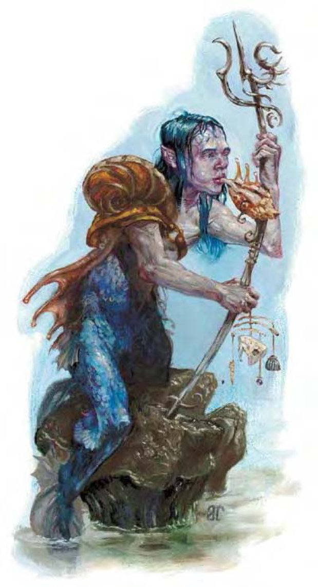

他们的体型约与人类相同，双脚有蹼，上半身、头、手臂皆为人形。
梭螺鱼人被认为发源于水元素界，但因为某些不明目的而迁居物质界。他们居于海中，喜好温水环境，但也可以容忍寒冷的深海。
梭螺鱼人表皮为银色，下半身鳞片淡化成银蓝色，头发则为深蓝或蓝绿色。梭螺鱼人会建构社群，像是深海里的巨大岩城或用其他天然材质精心布置的海底洞穴。梭螺鱼人会集体狩猎，但面对广大的海中资源时，他们只取生活所需。梭螺鱼人天性就对陆地居民抱持怀疑，并尽可能避免与他们打交道。然而对于意图侵入其社群的生物，他们的态度会变得极端严厉。被捕获的入侵者会被剥光丢到离岸10英里以外的海面随波逐流，“感受大海的慈悲”。
梭螺鱼人与残忍邪恶的沙华鱼人是天敌，永远不可能和平共存。两族之间连亘而血腥的战事有时还会妨碍到海运与贸易。
梭螺鱼人的身高与体重约与人类同。梭螺鱼人通晓通用语与水族语。
| 生命骰 | 3d8+3（16HP） |
| 先攻 | +0 |
| 速度 | 5英尺（1格）、游泳40英尺 |
| 防御等级 | 16（+6天生）、接触10、措手不及16 |
| 基本攻击/擒抱 | +3 / +4 |
| 攻击 | 三叉矛+4近战（1d8+1）；或重型十字弓+3远程（1d10/19-20） |
| 全力攻击 | 三叉矛+4近战（1d8+1）；或重型十字弓+3远程（1d10/19-20） |
| 占据/触及 | 5英尺 / 5英尺 |
| 特殊攻击 | 类法术能力 |
| 特殊能力 | 黑暗视觉60英尺 |
| 豁免 | 强韧+4、反射+3、意志+4 |
| 属性 | 力量12、敏捷10、体质12、智力13、感知13、魅力11 |
| 技能 | 手艺（任一）+7、交涉+2、躲藏+6、聆听+7、潜行+6、骑术+6、搜索+7、察言观色+7、侦察+7、生存+7（追踪+9）、游泳+9 |
| 专长 | 骑乘战斗、快速骑乘攻击 |
| 环境 | 温带水域 |
| 组织 | 一伙（2-5）、中队（6-11）或一团（20-80） |
| 挑战级数 | 2 |
| 宝藏 | 标准 |
| 阵营 | 通常中立善良 |
| 进化 | 4-9HD（中型） |
| 等级修正值 | +2 |
天性隐遁的梭螺鱼人会倾向回避战斗，但会坚决地保卫家园。他们会视环境决定采用近战还是远程攻击。遇到离巢的梭螺鱼人时，有90%机率会见到他们骑在友善的海洋生物身上，像是海豚。
类法术能力：每天1次――“四级召唤盟友术”。施法者等级7。梭螺鱼人通常会选水元素作为伙伴。
技能：梭螺鱼人在进行任何特殊动作或闪身避祸时，“游泳”检定具有+8种族加值。即使分心或受困，他们在进行“游泳”检定时都可以随时取10。若以直线前进，则可在游泳时进行奔跑动作。